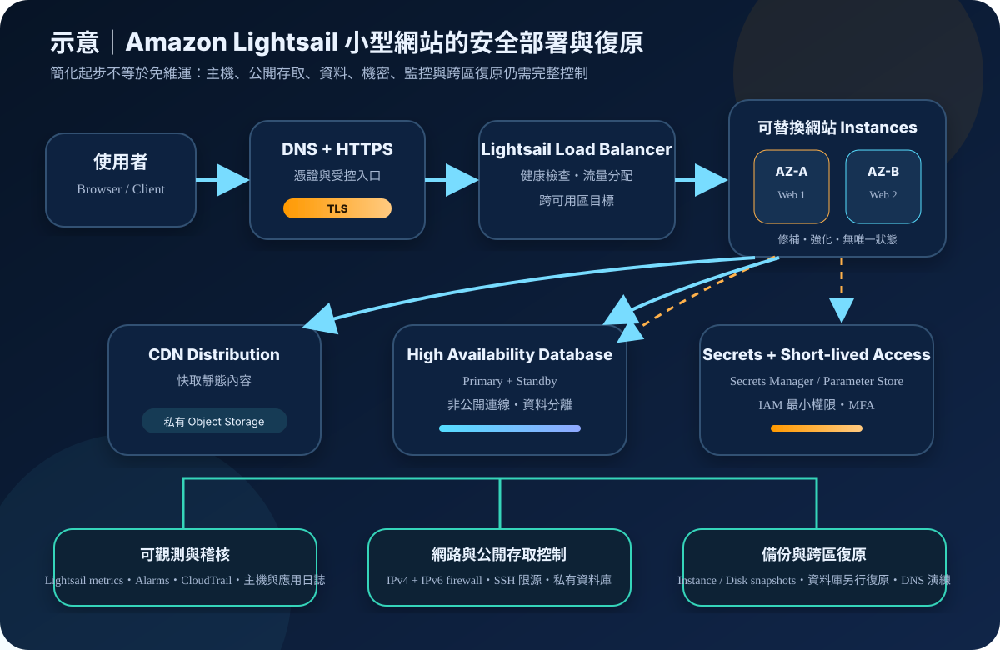

Amazon Lightsail：簡化雲端主機、網站部署與安全治理
Amazon Lightsail 將虛擬主機、儲存、網路、DNS、負載平衡、受管資料庫、物件儲存與 CDN 等常用能力整理成較容易啟用的方案，適合範圍清楚的網站與小型應用。操作介面變簡單，不代表作業系統修補、帳號安全、網路曝險、資料保護、監控與復原責任消失。
作者：Dr. William｜查閱與發布：2026-10-10
服務定位
Amazon Lightsail 是面向快速起步與可預測方案成本的簡化雲端服務。團隊可從作業系統、WordPress、LAMP、Nginx 等映像建立執行個體，搭配靜態 IP、DNS、SSD 區塊儲存、負載平衡器、受管 MySQL／PostgreSQL、物件儲存、CDN distribution、容器服務及 snapshots，減少一開始組合多個 AWS 服務的設定量。
Lightsail 不是「免維運主機」，也不是完整取代 Amazon EC2、Amazon VPC、Elastic Load Balancing、Amazon RDS、Amazon ECS 或企業級治理平台的抽象層。當工作負載需要精細網路拓樸、大規模自動擴縮、複雜多帳號治理、特殊執行個體、深度服務整合或嚴格合規控制時，應重新評估是否移轉至較完整的 AWS 服務組合。
核心概念與服務邊界
運算、網路與流量入口
- Instance 與 bundle：方案通常整合 vCPU、記憶體、SSD 儲存與資料傳輸額度；執行個體內的作業系統、套件與應用仍由客戶維護。
- Blueprint：可快速建立基礎作業系統或預先配置的應用程式堆疊；預裝不等於持續安全，部署後仍須盤點版本與更新來源。
- Static IP：提供可重新指派的固定公有 IPv4，避免執行個體停止再啟動後動態公有位址改變；DNS 切換與復原程序仍須設計。
- IPv4／IPv6 firewall：兩套規則彼此獨立，只控制進入公有 IP 的流量，且規則為允許式；出站流量與私有 IP 流量需由其他控制補足。
- Load balancer：可將流量分配至多個 Lightsail instances，支援健康檢查與 HTTPS，並可跨可用區放置目標以提高可用性。
- DNS 與 CDN：可管理網域解析並以 Lightsail distribution 加速靜態或快取內容；來源保護、憑證、快取政策與敏感資料排除仍須明確設定。
資料、備份與整合
- Block storage：可附加 SSD 磁碟擴充容量；檔案系統、掛載、資料一致性與應用層備份仍屬客戶責任。
- Managed database：提供 MySQL 或 PostgreSQL 的標準與高可用性方案；高可用性方案以不同可用區的 standby 提供故障切換。
- Object storage：適合圖片、影片與靜態檔案；bucket 與 object 預設為私有，但設定為公開後任何人都可能讀取內容。
- Snapshots：可對 instance、database 與 disk 建立時間點快照；instance 與 disk snapshot 可跨區複製，database snapshot 不能直接跨區複製。
- Monitoring：Lightsail 提供 instances、databases、load balancers、distributions、containers 與 buckets 的 metrics，並可建立門檻 alarms。
- CloudTrail：記錄 Lightsail console 與 API 的控制面操作；主機內登入、檔案異動、應用交易及惡意行為仍須自行蒐集日誌。
- VPC peering：可與同區域的預設 VPC 連接以使用其他 AWS 資源；路由、服務權限、DNS 與暴露面仍須逐項驗證。
適合與不適合的使用情境
適合
- 個人網站、作品集、部落格、小型內容網站、概念驗證與流量範圍可預估的應用。
- 希望以固定方案快速取得 Linux／Windows 主機、儲存、DNS、監控與基本網路控制。
- 小型團隊需要 WordPress、LAMP／LEMP 或簡單容器服務，且願意承擔主機與應用維運。
- 服務可由少量 instances、Lightsail load balancer 與 managed database 組成，暫時不需要複雜 VPC 拓樸。
- 團隊已建立修補、備份、告警、權限與復原流程，希望降低初始基礎設施設定量。
不適合或不能單獨完成
- 需要多層私有子網、細緻路由、集中式網路檢查、複雜 security group 關係或大規模多帳號 Landing Zone。
- 需求包含高度動態的自動擴縮、特殊運算硬體、廣泛執行個體選型或複雜容器編排。
- 必須由平台自動完成作業系統修補、應用弱點修復、惡意程式防護與資料分類。
- 單一 instance 即時寫入大量本機狀態，卻要求無資料遺失、跨區自動故障切換與接近零停機。
- 使用簡化介面後忽略 IAM、MFA、公開連接埠、IPv6、主機帳號、Secrets、CloudTrail、監控及 snapshot 管理。
示意故事案例：小型會員網站的受控成長
以下為示意案例，不代表特定企業或正式部署。 一個小型教育團隊要推出會員內容網站，初期使用兩台 Lightsail Linux instances 執行相同的網站版本，前方配置 Lightsail load balancer 與 HTTPS。網域解析指向負載平衡器，靜態圖片存放於預設私有的 object storage bucket，再透過受控的 CDN distribution 提供內容。
網站 instances 分散於不同可用區，不直接保存會員資料。應用連接 Lightsail high availability managed database，資料庫維持非公開狀態；應用程式所需的第三方 API 機密存於 AWS Secrets Manager 或適用的 Parameter Store，透過最小權限與短期憑證存取，不寫入映像、版本庫或啟動腳本。IPv4 與 IPv6 firewall 只允許負載平衡器所需流量；SSH 僅在核准維護時段對固定管理來源開放。
團隊每週套用作業系統與 WordPress／外掛更新，先在測試 instance 驗證，再輪替正式 instances。Lightsail metrics 與 alarms 監控 CPU、網路、HTTP 錯誤與資料庫狀態；CloudTrail 保存建立、刪除、快照、網路與 IAM 變更。Instance 與 disk snapshots 定期複製到第二區域，資料庫另以資料匯出或相容的資料層複寫流程建立跨區副本，並實際演練 DNS 切換與網站重建。

建置與運作流程
- 界定工作負載：記錄流量、資料分類、可用性、RTO、RPO、作業系統、應用堆疊、成長預期與法規限制。
- 確認服務邊界：比較 Lightsail 與 EC2、ECS、RDS、CloudFront、Route 53 等完整服務，確認簡化方案能滿足網路、擴縮與治理需求。
- 建立身分控制：人員使用聯合登入、MFA 與短期工作階段；依角色限制建立、刪除、快照、網路、資料庫及 bucket 管理權限。
- 選擇區域與方案：依使用者位置、資料主權、bundle 資源、傳輸額度、服務可用性及第二區域復原能力決定部署位置。
- 建立測試環境：從核准 blueprint 建立 instance，盤點預裝套件、預設帳號、SSH keys、服務連接埠及更新狀態。
- 強化主機：停用不必要服務與帳號，更新套件，使用主機防火牆、檔案權限、惡意行為監測及集中日誌，禁止將機密寫入映像。
- 配置網路：分別檢查 IPv4 與 IPv6 firewall，只開放必要 inbound ports；SSH／RDP 限制來源，並補上出站與私有流量治理。
- 設計入口：單機服務使用 static IP；正式網站評估 load balancer、HTTPS、健康檢查、多可用區 instances 與受控 DNS。
- 分離資料：將資料庫與應用主機分開；物件儲存維持私有，只有明確公開內容才開放讀取，並配置版本或替代保護措施。
- 保護機密與加密：管理者不使用長期 Access Key；應用機密放入 Secrets Manager／Parameter Store。需要客戶管理 KMS key、細緻 key policy 或特定加密治理時，確認 Lightsail 資源是否支援，否則改用相符的完整 AWS 服務。
- 建立監控與稽核：設定 Lightsail metrics、alarms、應用 health check、主機與應用日誌；建立持續 CloudTrail trail 並保護日誌儲存。
- 建立備份：安排 automatic／manual snapshots，確認資料庫 point-in-time restore 與 manual snapshot 保留，避免刪除資源時連同可復原資料消失。
- 演練復原：從 snapshot 建立新 instance 與 disk，驗證應用、權限、DNS、憑證與資料一致性；跨區複製支援的 snapshots，資料庫另建立可測試的跨區程序。
- 設定成長門檻：當流量、團隊、法規、網路或自動化需求超過 Lightsail 邊界時，依計畫移轉至 EC2、RDS、ECS、完整 VPC 或其他適合服務。
成本、可用性與維運考量
Lightsail 以方案化價格整合運算、記憶體、SSD 儲存與資料傳輸額度，執行個體依使用時間計費至每月方案上限。總成本仍可能包含額外 disks、snapshots、load balancers、managed databases、object storage、CDN distributions、DNS、超額資料傳輸、公有 IPv4、第二區域資源與相依 AWS 服務。停止但未刪除的資源、保留 snapshots、未使用 static IP 或大量對外傳輸都可能持續產生費用。
單一 Lightsail instance 仍是單點故障。需要較高可用性時，應建立至少兩個可替換 instances、分散至不同可用區並放在 load balancer 後方；資料庫採 high availability plan，靜態內容外部化，部署流程可重建 instance。這些措施提升區域內韌性，但不會自動形成跨區服務。
Instance 與 disk snapshots 可跨區複製，但 database snapshots 不能直接跨區複製。跨區復原須另行處理資料庫資料、object storage、DNS、憑證、機密、IAM、監控、應用版本與基礎設施設定。RTO 與 RPO 不能只用「已有 snapshot」推定，必須以實際還原時間、資料完整性與切換演練證明。
Amazon Lightsail 特有資安風險與控制
- 把簡化操作誤認為免維運：建立 OS、套件、CMS、外掛與應用修補清單，指定負責人與更新期限。
- 預設映像快速老化：部署後立即盤點版本、停用示範帳號與不必要服務，建立可重複的強化與重建流程。
- IPv4／IPv6 規則不一致：兩套 firewall 分別審查；不可只縮限 IPv4，卻讓管理或資料庫連接埠經 IPv6 對外開放。
- 防火牆只管公網 inbound：Lightsail firewall 不控制 outbound，也不控制 private IP 流量；以主機防火牆、應用允許清單、DNS／代理或完整 VPC 架構補足。
- SSH／RDP 對全球開放：限制固定來源與維護時段，使用個別金鑰、MFA 管理流程、登入告警與定期金鑰撤銷。
- Static IP 造成長期攻擊面：只對必要服務使用固定公網位址，將網站置於 load balancer／CDN 後，避免直接暴露管理介面。
- Object storage 誤設公開：維持 bucket 私有並啟用帳號層 Block Public Access；公開內容與私密內容分 bucket 管理，定期檢查 object 權限。
- Bucket access key 權限過大：優先使用角色；若外掛只能使用 bucket access key，限制用途、集中保管、輪替並監控最後使用時間，外洩時立即撤銷。
- 機密寫入 blueprint、snapshot 或 user data：使用 Secrets Manager／Parameter Store；建立 snapshot 前清除暫存檔、歷史紀錄與部署殘留。
- 應用與資料庫共置：將正式資料庫移至 managed database，維持非公開存取，限制來源並避免在 instance 本機保存唯一資料副本。
- 高可用性誤判：Load balancer 不會自動修復應用資料一致性，database HA 也不是跨區備份；分別測試 instance、應用、資料庫與區域故障。
- CloudTrail 覆蓋不足：CloudTrail 只提供控制面 API 證據；另收集 SSH、OS、Web、資料庫與應用稽核日誌，並避免敏感資料進入日誌。
- 告警過度單一：Lightsail alarm 監看單一 metric；結合外部可用性探測、應用錯誤、憑證期限、磁碟空間與安全事件監控。
- 復原受限於 snapshot：跨區保存支援的 instance／disk snapshots，另行保護資料庫與物件資料，定期從零重建並驗證 DNS 與憑證。
- 成長後仍留在不適合的平台：設定 CPU、流量、部署頻率、團隊人數、合規與網路需求門檻，超過門檻即執行移轉計畫。
共同責任邊界
AWS 負責 Lightsail 受管服務及底層雲端基礎設施的安全。對 Lightsail instance 而言，客戶仍負責 guest OS、套件、應用程式、帳號、SSH keys、主機設定、資料、firewall rules、公開存取、監控、備份與復原。使用 managed database、load balancer、object storage 或 CDN 時，AWS 承擔的基礎設施管理範圍增加，但客戶仍須負責資料分類、權限、連線設定、加密需求、內容公開決策與業務復原。
客戶須落實 IAM 最小權限、人員 MFA 與短期憑證、IPv4／IPv6 網路隔離、公開存取治理、適用的 KMS 加密要求、Secrets Manager／Parameter Store、CloudTrail 與 Lightsail／CloudWatch 觀測、資料備份及跨區復原。Lightsail 的固定方案與簡化介面不會替客戶判斷應用是否安全、公開連接埠是否合理、snapshot 是否可還原，或第二區域是否能達成目標 RTO／RPO。
上線前可執行檢查清單
- □ 已記錄服務擁有者、資料擁有者、區域、資料分類、RTO、RPO、容量與移轉門檻。
- □ 已比較 Lightsail 與 EC2／RDS／ECS／完整 VPC，確認簡化功能足以支援目前需求。
- □ 管理人員使用聯合登入、MFA 與短期憑證；root 不用於日常操作。
- □ IAM 已按查看、部署、網路、snapshot、database 與刪除權限分離，並套用資源與標籤條件。
- □ Blueprint、OS、CMS、外掛、套件與應用版本已盤點並完成修補，沒有預設或共用帳號。
- □ IPv4 與 IPv6 firewall 已分別檢查，只開放必要 ports；SSH／RDP 已限制來源與時間。
- □ 已評估 outbound 與 private IP 流量風險，不能控制時已使用主機或其他網路控制補足。
- □ 正式流量經 HTTPS；load balancer／CDN 的憑證、健康檢查、來源與快取政策已測試。
- □ Static IP、DNS 與故障切換程序已記錄，DNS TTL 與替換 instance 流程符合 RTO。
- □ 應用與資料庫已分離；正式資料庫採適合的 HA plan、非公開連線與有限來源。
- □ Object storage 維持私有；帳號層 Block Public Access、bucket 權限與公開 objects 已審查。
- □ 未使用不必要的 bucket access keys；必要 keys 已安全保存、輪替、盤點並設撤銷程序。
- □ 機密存於 Secrets Manager／Parameter Store，未出現在映像、user data、版本庫、snapshot 或日誌。
- □ 儲存與資料服務的加密能力符合資料分類；需要 customer-managed KMS key 時已確認服務支援或改用其他服務。
- □ Lightsail metrics 與 alarms 已配置，並有外部可用性、應用錯誤、磁碟與安全事件監控。
- □ CloudTrail 持續 trail 已啟用；主機、Web、資料庫與應用日誌另行集中保存並限制存取。
- □ Automatic／manual snapshots、database point-in-time restore 與保留期限已設定，刪除前會保留必要 manual snapshot。
- □ Instance／disk snapshots 已跨區複製；資料庫與 object storage 的跨區復原另有受控流程。
- □ 已從 snapshot 實際還原、驗證應用與資料，並完成第二區域 DNS、憑證、機密及監控切換演練。
- □ 已設定 Budget、成本異常監控、snapshot 清理、資料傳輸與閒置 static IP 檢查。
AWS 官方一手來源
- What is Amazon Lightsail?（查閱：2026-10-10）
- Lightsail instance bundles（查閱：2026-10-10）
- Networking resources in Amazon Lightsail（查閱：2026-10-10）
- Control instance traffic with firewalls in Lightsail（查閱：2026-10-10）
- Distribute web traffic with Lightsail load balancers（查閱：2026-10-10）
- Create and manage relational databases in Lightsail（查閱：2026-10-10）
- High availability databases in Lightsail（查閱：2026-10-10）
- Manage Lightsail bucket access permissions（查閱：2026-10-10）
- Identity and access management for Amazon Lightsail（查閱：2026-10-10）
- Snapshots in Amazon Lightsail（查閱：2026-10-10）
- Copy Lightsail snapshots across AWS Regions（查閱：2026-10-10）
- Resilience in Amazon Lightsail（查閱：2026-10-10）
- Monitor your Lightsail resource metrics（查閱：2026-10-10）
- Monitor Lightsail API activity with AWS CloudTrail（查閱：2026-10-10）
- Amazon Lightsail pricing（查閱：2026-10-10）
- AWS Well-Architected Security Pillar｜Shared responsibility（查閱：2026-10-10）
內容說明
本文依查閱日可用的 AWS 官方文件整理，作為基礎學習與架構討論材料；實際部署仍須依最新區域支援、方案、配額、價格、網路能力、映像版本、資料分類、合規要求與復原演練結果調整。